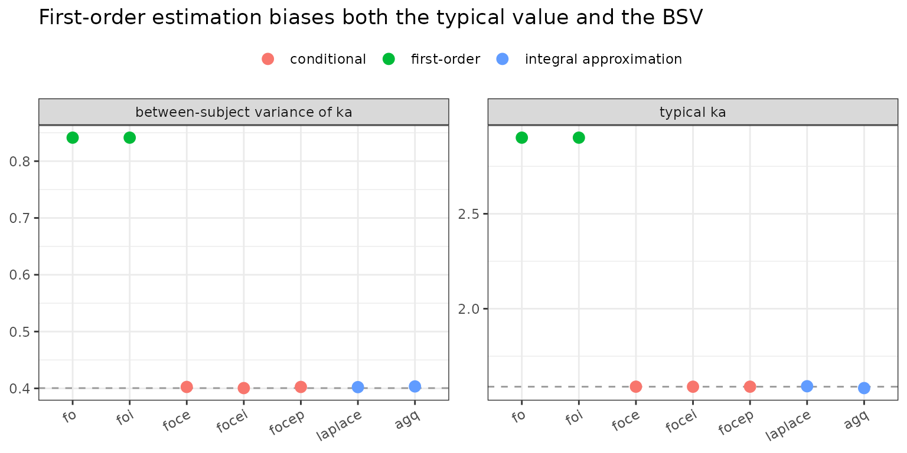

The conditional-estimation ladder in nlmixr2: fo, foce, focei, focep, laplace, agq
2026-09-22
Source:vignettes/articles/linearized-quadrature-ladder.Rmd
linearized-quadrature-ladder.RmdThe workhorse family: linearization and integral approximation
Most nlmixr2 fits use one of the
conditional-estimation methods –
est = "focei" is the default. They all attack the same
intractable integral (the marginal likelihood, with the random effects
integrated out) but with successively better – and more expensive –
approximations. From crudest to most accurate:
-
fo/foi– First-Order (with Interaction): linearize the model about the population random-effect value (eta = 0). -
foce/focei– First-Order Conditional Estimation (with Interaction): linearize about each subject’s conditional mode.foceiis the default. -
focep– FOCE+: FOCE with the residual error evaluated at the live conditional eta. -
laplace– the Laplace approximation: a second-order expansion of the integral at the mode. -
agq– Adaptive Gaussian Quadrature: evaluate the integral on a quadrature grid;laplaceis exactly the one-node case, and adding nodes approaches the exact integral.
This article shows why the rung matters with a worked
example, then explains each method. (For the Monte-Carlo cousins of
laplace/agq – importance sampling – see the imp/impmap/qrpem article.)
Worked example: first-order estimation is biased
We fit the theophylline data with a one-compartment oral model,
between-subject variability on ka, cl and
v.
library(nlmixr2)
theoModel <- function() {
ini({
tka <- 0.45; tcl <- 1; tv <- 3.45
eta.ka ~ 0.6; eta.cl ~ 0.3; eta.v ~ 0.1
add.sd <- 0.7
})
model({
ka <- exp(tka + eta.ka)
cl <- exp(tcl + eta.cl)
v <- exp(tv + eta.v)
d/dt(depot) <- -ka * depot
d/dt(center) <- ka * depot - cl / v * center
cp <- center / v
cp ~ add(add.sd)
})
}Climb the ladder – only est = (and the matching control)
changes:
fitFo := nlmixr2(theoModel, nlmixr2data::theo_sd, est = "fo",
control = foceiControl(print = 0L))
fitFoi := nlmixr2(theoModel, nlmixr2data::theo_sd, est = "foi",
control = foceiControl(print = 0L))
fitFoce := nlmixr2(theoModel, nlmixr2data::theo_sd, est = "foce",
control = foceiControl(print = 0L))
fitFocei := nlmixr2(theoModel, nlmixr2data::theo_sd, est = "focei",
control = foceiControl(print = 0L))
fitFocep := nlmixr2(theoModel, nlmixr2data::theo_sd, est = "focep",
control = foceiControl(print = 0L))
fitLaplace := nlmixr2(theoModel, nlmixr2data::theo_sd, est = "laplace",
control = laplaceControl())
fitAgq := nlmixr2(theoModel, nlmixr2data::theo_sd, est = "agq",
control = agqControl(nAGQ = 3L))Collect the typical ka and its between-subject variance
across the ladder:
fits <- list(fo = fitFo, foi = fitFoi, foce = fitFoce, focei = fitFocei,
focep = fitFocep, laplace = fitLaplace, agq = fitAgq)
tab <- data.frame(
method = names(fits),
objf = sapply(fits, function(f) as.numeric(f$objf)),
ka = sapply(fits, function(f) exp(as.numeric(f$theta[["tka"]]))),
bsv.ka = sapply(fits, function(f) as.numeric(diag(f$omega)[["eta.ka"]])))
round(tab[, -1], 3)
#> objf ka bsv.ka
#> fo 128.011 2.901 0.841
#> foi 128.011 2.901 0.841
#> foce 116.804 1.589 0.402
#> focei 116.804 1.589 0.400
#> focep 116.804 1.589 0.402
#> laplace 116.804 1.592 0.402
#> agq 118.135 1.582 0.403The first-order fits stand apart: fo/foi
push the typical ka far above the conditional methods and
roughly double the between-subject variance, with a
worse objective. Every conditional method (foce,
focei, focep) and the integral approximations
(laplace, agq) agree closely:
library(ggplot2)
lvl <- c("fo", "foi", "foce", "focei", "focep", "laplace", "agq")
tab$method <- factor(tab$method, levels = lvl)
tab$family <- ifelse(tab$method %in% c("fo", "foi"), "first-order",
ifelse(tab$method %in% c("foce", "focei", "focep"), "conditional",
"integral approximation"))
refKa <- tab$ka[tab$method == "focei"]
refBsv <- tab$bsv.ka[tab$method == "focei"]
long <- rbind(
data.frame(method = tab$method, family = tab$family,
quantity = "typical ka", value = tab$ka, ref = refKa),
data.frame(method = tab$method, family = tab$family,
quantity = "between-subject variance of ka", value = tab$bsv.ka, ref = refBsv))
ggplot(long, aes(method, value, colour = family)) +
geom_hline(aes(yintercept = ref), linetype = 2, colour = "grey60") +
geom_point(size = 3) +
facet_wrap(~ quantity, scales = "free_y") +
labs(x = NULL, y = NULL, colour = NULL,
title = "First-order estimation biases both the typical value and the BSV") +
theme_bw() + theme(legend.position = "top",
axis.text.x = element_text(angle = 30, hjust = 1))
Why does fo miss? It linearizes the model about
eta = 0 – the typical subject – and then treats
every subject as a small perturbation of that one curve. For a nonlinear
model with real between-subject spread, that single linearization is a
poor description of the actual subjects, so the fit compensates by
inflating the random-effect variance and shifting the typical value. The
conditional methods remove this by re-linearizing about each
subject’s own conditional estimate.
Choosing a rung
-
focei– the default, and the right first choice: the conditional mode plus the eta-residual interaction term. Use it unless you have a specific reason not to. -
foce– FOCEI without the interaction term; appropriate when the residual error does not depend on the individual prediction (e.g. a pure additive error on an untransformed scale).focepkeeps the interaction but evaluates the residual at the live conditional eta. -
fo/foi– fast and historically important (the original NONMEM method), but biased for nonlinear models; use only for a quick first pass or to reproduce a legacy FO analysis. -
laplace– the same conditional idea expressed as an integral approximation; the natural choice for non-normal likelihoods (ll()endpoints, ordinal/count data) where the FOCEI residual machinery does not apply. -
agq– when you need the most accurate marginal likelihood a deterministic method can give, especially for sparse data or strongly non-Gaussian individual posteriors: increasenAGQuntil the objective stabilizes. It is the deterministic counterpart of the Monte-Carlo importance-sampling methods.
A related but distinct option is babelmixr2’s
external engine est = "nlmer", which drives the
optimization with lme4::nlmer. lme4 fits
nonlinear mixed-effects models by its own Laplace
approximation (nlmer supports only nAGQ = 1, so no
true adaptive Gauss-Hermite), and babelmixr2 feeds it
per-subject predictions and analytic gradients from nlmixr2’s
nlm C engine. Because the outer objective is
lme4’s Laplace deviance rather than nlmixr2’s FOCEI/Laplace
objective, its objective-function value is not
comparable to the methods above and the fit will generally
differ – it is a genuinely independent implementation (closer to
est = "nlm" in machinery than to focei),
useful as an outside cross-check rather than a member of this same
ladder.
The remainder is the algorithm reference.
How the ladder works
The marginal likelihood of subject i integrates the
random effects out:
p(y_i) = integral p(y_i | eta) p(eta) d(eta)Every method here approximates this same integral; they differ in where and how carefully they approximate the integrand.
-
First-order (
fo,foi). Expand the model to first order inetaabouteta = 0. The marginal becomes Gaussian in closed form – very fast, but the single linearization point makes it biased when the model is nonlinear or the random effects are large.foiadds the interaction term (the residual variance is allowed to depend oneta). -
First-order conditional (
foce,focei,focep). Re-linearize about each subject’s conditional mode (its empirical-Bayes estimate), updated every iteration. This tracks the real subjects far better than a single population linearization.foceiadds the eta-residual interaction;focep(FOCE+) evaluates the residual error at the current conditional eta. -
Laplace (
laplace). Instead of linearizing the model, approximate the integral by a second-order (Laplace) expansion of the log-integrand at the mode. For a normal model this is very close to FOCEI; its value is that it applies directly to arbitrary (non-normal) likelihoods. -
Adaptive Gaussian quadrature (
agq). Place a Gauss-Hermite quadrature grid (adaptively scaled and centered at the mode) and sum the integrand over it.nAGQ = 1reproduces Laplace; more nodes tighten the approximation toward the exact integral, at proportional cost.
Each method also has mu-referenced (m…)
and IRLS (i…) variants
(e.g. mfocei, iagq) that change how covariate
effects are handled in the parameter step, and a fast analytic-gradient
path (foceiControl(fast = TRUE)), but the underlying
approximation of the integral is the one described here.
How it relates to the other methods
-
vs SAEM – SAEM (its own
article) avoids the integral approximation entirely with a
stochastic (MCMC) EM; it is more robust for difficult likelihoods but
does not return the marginal
-2LLdirectly. -
vs imp/impmap/qrpem – the importance-sampling methods are the
Monte-Carlo counterpart of
laplace/agq: they evaluate the same integral by sampling rather than by a deterministic grid, and give a (near-)exact likelihood. -
vs NONMEM / Phoenix –
fo/foce/foceicorrespond to NONMEM’s classicalFO/FOCE/FOCEIand Phoenix’s FO/FOCE;laplaceandagqcorrespond to NONMEM’sLAPLACEand Gaussian-quadrature options.
References
- Beal SL, Sheiner LB. Estimating population kinetics. Crit. Rev. Biomed. Eng., 1982 (FO / FOCE).
- Wang Y. Derivation of various NONMEM estimation methods. J. Pharmacokinet. Pharmacodyn., 2007.
- Pinheiro JC, Bates DM. Approximations to the log-likelihood function in the nonlinear mixed-effects model. J. Comput. Graph. Stat., 1995 (Laplace / AGQ).